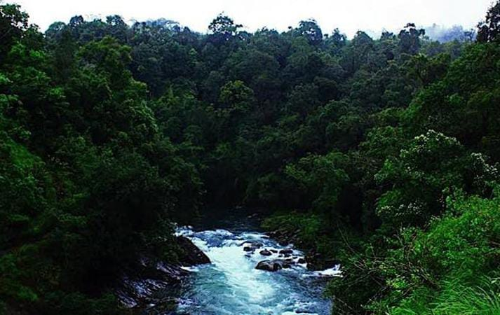
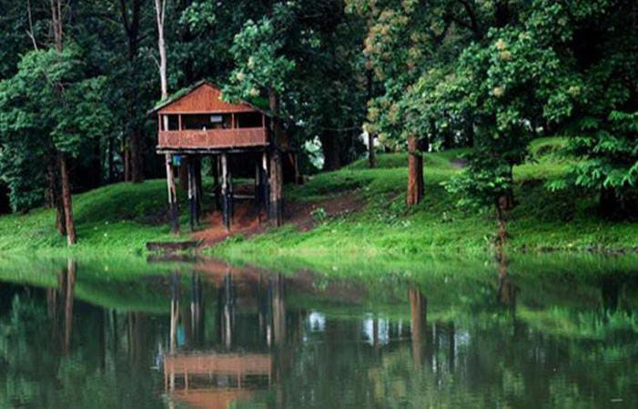

Palakkad

Palakkad is one of the fourteen districts of Kerala and has no coastal line. The district opens the state to the rest of the country through the Palakkad Gap with a width of 32 to 40 Kms. Its geographical position, historical background, educational status, tourism hot-spots and above all, the development activities that are carried out, are wide and varied. The district is one of the main granaries of Kerala and its economy is primarily agricultural. The district is also the land of Palmyrahs.Palakkad is the gateway to Kerala due to the presence of Palakkad Gap, in the Western Ghats. Situated at the foot of the western ghats, this is the gateway to kerala from The north. In earlier times, Palakkad was known as Palakkattussery. Some emytologists trace the word "Palakkad" from the word Palai nilam, which means dry lands. The commonly held belief, however, is that the name is a fusion of two malayalam words Pala (alsteria scholaris), a tree that is found abondantly in Palakkad and kadu which means forest which goes to prove that this place was once a beautiful stretch of forests covered with the sweet scented flowers of the pala tree.
Hot Tourist Spots
Silent Valley National Park

Parambikulam Wildlife Sanctuary
